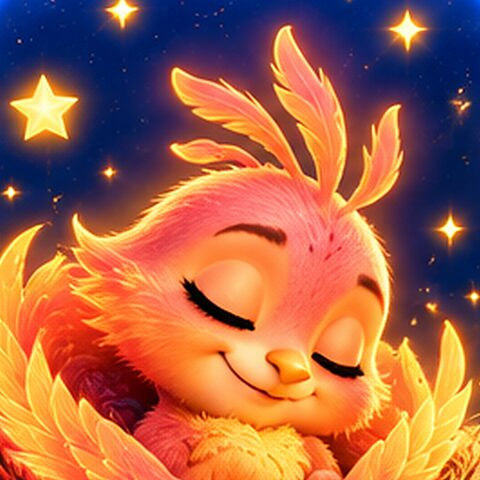

Flügel strecken
Arme weit nach oben und zur Seite, wie Fia ihre Flügel. Ein grosses Gähnen ist erlaubt.

Tippen öffnet das Ritual. Was du auslässt, ist auch gut.
 Fias WeltFia KörperkosmosTagsüber spüren: Atem, Körper, Zeichen
Fias WeltFia KörperkosmosTagsüber spüren: Atem, Körper, Zeichen
Fia wacht auf, und du auch. Ganz ohne Eile.
Arme weit nach oben und zur Seite, wie Fia ihre Flügel. Ein grosses Gähnen ist erlaubt.
Ein durch die Nase, langsam aus. Fia atmet mit.
Raus ans Licht, ans Fenster oder auf den Balkon. Bei Wolken gern etwas länger. Fia fliegt mit.
Gönn dir zuerst Wasser und Licht. Der Kaffee schmeckt am besten etwa 60 bis 90 Minuten nach dem Aufstehen:
07:30–08:00
Kein richtig, kein falsch. Fia merkt es sich nur für dich.
Ein Gefühl, keine Messung. Tipp den Mond, der passt.
Ein Satz oder ein Bild aus der Nacht, wenn du magst. Ohne Deutung.
Fia hat es über Nacht gehalten. Nimm dir heute nur den nächsten kleinen Schritt.
Kleine Helfer, damit der Abend leichter wird.
Deine Aufstehzeit ist der Anker: Wenn du sie verschiebst, wandert der ganze Tag mit, auch die Schlafenszeit. Am besten jeden Tag ähnlich, auch am Wochenende. Ausrutscher sind normal.
Erster Kaffee, etwa 60 bis 90 Minuten nach dem Aufstehen:
07:30–08:00
Der letzte gute Moment für Kaffee, Schwarztee oder Cola:
14:30
Koffein wirkt lange nach. Rund 8 bis 10 Stunden vor dem Schlafen ist ein guter Abstand.
Höchstens 20 Minuten, am besten vor 15 Uhr. Augen zu, Fia weckt dich mit einem leisen Ton.
Ein Spaziergang am Tag, am liebsten am Morgen im Licht. Kein Zähler, kein Muss. Am Abend nur noch sanft dehnen.
Zehn Minuten liegen, Augen zu, Fia führt dich in eine tiefe Ruhe (ähnlich wie Yoga Nidra). Das gibt Kraft, ohne die Nacht zu stören.
Fünf Minuten am Tisch, nicht im Bett. Was du aufschreibst, musst du heute nicht mehr tragen.
Lieber sprechen als tippen? Tipp ins Feld und dann aufs Mikrofon der Tastatur. Deine Stimme bleibt bei dir.
Die Zeilen werden zu Funken. Fia hält sie bis morgen früh für dich, dann siehst du sie im Phönix-Morgen wieder.
Du musst das jetzt nicht prüfen.
Drei kleine Schritte. Du musst heute nichts mehr lösen.
Schön, dass du da bist. Wir glühen jetzt langsam aus.
Deckenlicht aus, eine kleine warme Lampe an. Zimmer lüften, kühl ist gut.
Zweimal durch die Nase einatmen, lang durch den Mund aus.
Leg es ausserhalb vom Bett hin. Wenn du Fia im Bett hören willst, starte zuerst «Im Bett» und leg das Handy dann umgedreht weg.
Wenn du Zeit hast: drei Glut-Kugeln für die letzten anderthalb Stunden. Tipp, wenn du einen Schritt gemacht hast, dann glüht die Kugel aus. Was du auslässt, ist auch gut.
Was war heute schön, auch wenn es klein war?
Wähle einen Weg. Der Bildschirm wird dunkel, Fia führt mit Stimme und Klang.
Sieben ruhige Geschichten aus Fias Städtchen. Ohne Spannung, mit offenem Ende. Die von heute leuchtet.
Du wählst drei Dinge, Fia erzählt daraus eine ruhige Geschichte. Jedes Mal ein bisschen anders.
Misch dir deinen eigenen Abendklang. Alles wird im Handy erzeugt und hört von selbst auf (Dauer wie unten).
Gemacht direkt im Handy, ganz ohne Aufnahme. Der Klang wird langsam leiser und hört von selbst auf.
Wenn du magst, nimm eine Frage mit in den Schlaf. Am Morgen schaust du im Traum-Nest, was kam. Und wenn nichts kam, ist das auch gut.
Fia weckt dich zu deiner Aufstehzeit mit einem Ton, der langsam heller wird, und einem Bildschirm wie ein Sonnenaufgang.
Wichtig: Das klappt nur, solange Fias Nest offen bleibt (am Ladekabel, Bildschirm nicht sperren). Für einen sicheren Wecker nimm zusätzlich den Wecker deines Handys.
Die Stimme kommt vom Handy selbst. Am schönsten mit leiser Lautstärke, Handy umgedreht neben dem Bett.
Das ist normal und geht vorbei. Keine Uhr, kein Licht, nur Glut.
Fast alle Menschen wachen nachts ein paar Mal auf, meist merken sie es nur nicht. Wenn du aufstehen musst, nimm das rote Nachtlicht: Es blendet nicht und lässt die Müdigkeit da.
Nach etwa 20 Minuten hilft es oft, kurz aufzustehen: an einen ruhigen Ort, gedämpftes Licht, etwas Ruhiges tun und erst müde zurück ins Bett. Nicht auf die Uhr schauen.
Fias Nest ist ein Begleiter zum Ruhigwerden, keine Behandlung.
Sprich mit deiner Hausärztin oder deinem Hausarzt. Es gibt gute Hilfe, zum Beispiel eine Schlaf-Therapie (kognitive Verhaltenstherapie bei Schlafproblemen, KVT-I). Deine Ärztin kennt auch die anerkannten Schlafzentren in der Schweiz.
Eine Psychotherapeutin oder ein Psychotherapeut kann dich begleiten, die Hausarztpraxis hilft beim Finden. Wenn du mit Alkohol, Rauchen oder anderem eine Pause machen willst: SafeZone berät anonym und gratis online.
Rund um die Uhr, in der Schweiz.
Fia ist ein kleines Phönix-Küken. Am Abend glüht sie langsam aus, und am Morgen steht sie neu auf. Fias Nest begleitet dich durch den Tag zur Ruhe.
Fias Nest ist eine Wohlfühl-App und kein Medizinprodukt. Sie stellt keine Diagnose und ersetzt keine Fachperson.
Alles, was du eingibst, bleibt nur auf diesem Gerät. Kein Konto, keine Werbung. Nur wenn du im Nest das Häkchen setzt, gehen Lern-Zahlen (ohne Namen, ohne Texte, nie Stimme oder Bilder) an Sense Engine.
Fias Nest · Zürich
Wähle 3 bis 5 Schritte, die zu dir passen. Pro Woche kommt höchstens ein neuer dazu. Probier es eine Woche.
Ein Blick zurück, ohne Punkte und ohne Noten.
Probier eine Sache sieben Tage lang. Fia schaut danach nur, wie sich deine Morgen angefühlt haben, sonst nichts.
Nicht jeder Tag ist gleich. Fia passt sich an.
Für Abende, an denen alles länger ging, oder wenn Kinder dich gebraucht haben. Drei Minuten, Fia führt.
Wenn du etwas am Abend weglässt oder weniger machst. Ohne Wertung, in deinem Tempo.
Am Anfang einer Pause können die Nächte unruhiger sein. Das ist normal und wird meist nach einigen Tagen bis Wochen besser. Fias Nest gibt keine medizinischen Ratschläge. Wenn du Fragen hast oder es dir schwerfällt, sprich mit deiner Hausärztin oder deinem Hausarzt.
Für Paare und Familien, die zusammen zur Ruhe kommen. Alles bleibt auf diesem Gerät.
Tipp auf einen Namen, wenn die Person heute beim Ritual war. Lang drücken entfernt sie.
Für die Kleinen gibt es Mondschein mit Otti, für Eltern Mama Affe. Fia lässt den Eltern danach Zeit für das eigene Mini-Ritual.
So passt sich Fias Nest an dich an.
Die Aufstehzeit ist dein Anker. Der ganze Tag richtet sich danach.
Wer sitzt mit dir im Nest? Fia bleibt immer da, dein Begleiter wacht zusätzlich bei den Ritualen.
Im Browser kommen Erinnerungen nur, solange Fias Nest offen ist. Nichts wird verschickt, alles bleibt auf dem Gerät.
Fia merkt sich, welche Wege du am liebsten magst, und schlägt sie öfter vor. Nur Zahlen, nur auf diesem Gerät. Nie deine Texte, nie deine Stimme.
Alles bleibt auf diesem Gerät. Hier kannst du eine Kopie sichern (Sorgen, Träume, gute Dinge, Zeiten).
Erzähl, was dich gerade beschäftigt. Fia antwortet kurz und sanft. Gespeichert wird nichts.
Fia ist eine Begleiterin, keine Fachperson, und stellt keine Diagnose. Wenn es dir gerade sehr schwer geht, ruf an. Rund um die Uhr, in der Schweiz:

Ich bin ein kleines Phönix-Küken. Am Abend glühe ich langsam aus, am Morgen stehe ich neu auf. Komm, wir machen das zusammen.
Wann stehst du meistens auf? Danach richtet sich dein ganzer Tag mit Fia.
Wer sitzt mit dir im Nest?
Alles, was du eingibst, bleibt auf diesem Gerät. Kein Konto, keine Werbung.
Fias Nest ist ein Begleiter zum Ruhigwerden, kein Medizinprodukt, und ersetzt keine Fachperson. Wenn es dir sehr schwer geht: 143 Die Dargebotene Hand, im Notfall 144.
Wach werden ist normal. Langsam, das Licht bleibt warm.
Gute Nacht. Fia weckt dich sanft zu deiner Aufstehzeit.